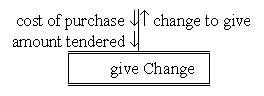

JSP subprograms and data flow

The subprogram give Change requires
two in only data flows identified as cost of purchase
and amount tendered and returns a value identified as
change to give. It is also possible for the
type, or class, of the data flow to be stated.
Java does not have any in out
data flows. Parameters of primitive types (int, char, double, boolean, etc.)
are passed by value and parameters which are an instance of some
class are passed by reference, which implicitly allows their
state to change.
The double horizontal lines indicate that this subprogram is pre-supplied in so far as the current development project is concerned. A subprogram which was developed as a part of the current project would have double horizontal lines.